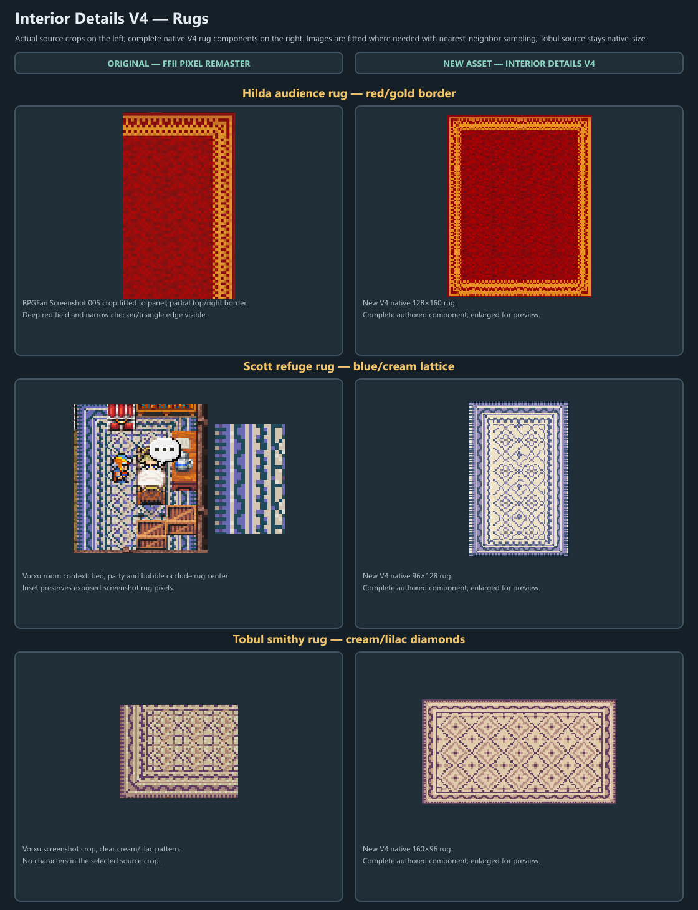
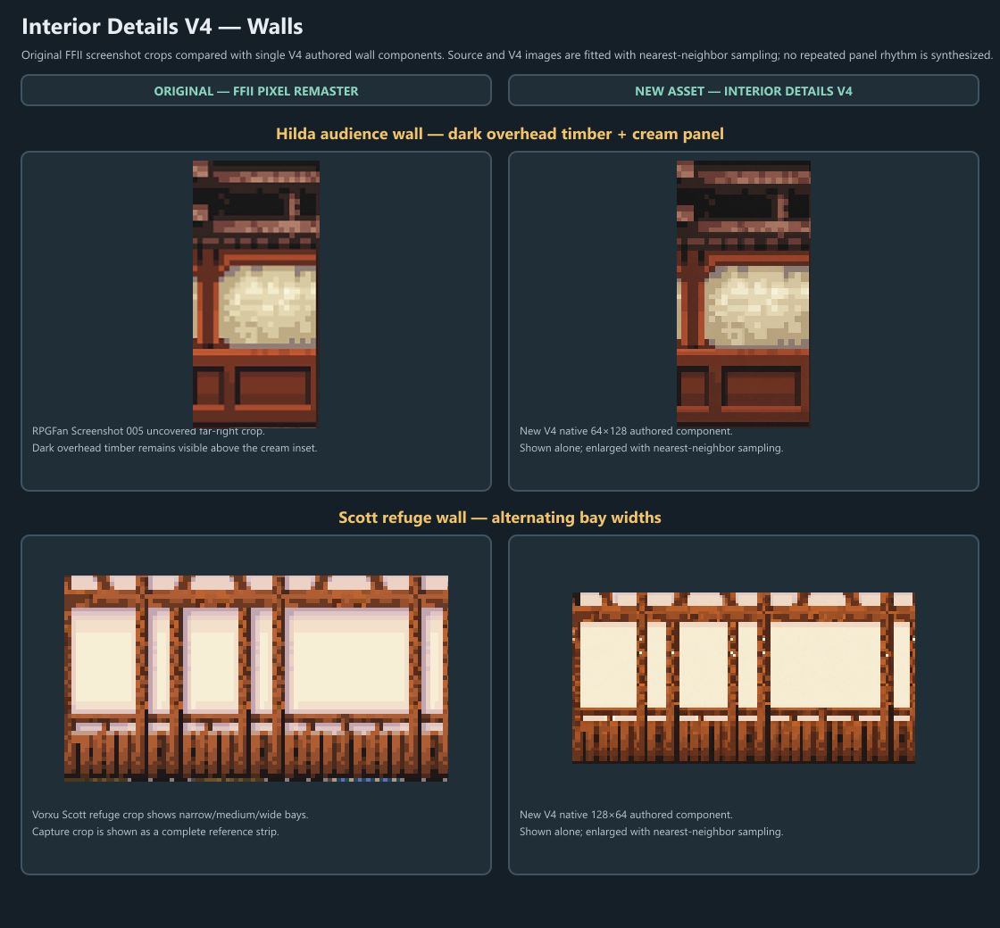

Border width is close; V4 gold is brighter/oranger and field grain finer/more even.
Interior Details V4 — Original Reference and New Art
Actual FFII Pixel Remaster crops at left; V4 native components at right. Captions distinguish source crops from complete authored assets, and nearest-neighbor sizing is disclosed. This is component-level comparison, not a full-room or retail-parity claim.
Sources: RPGFan Screenshot 005 (Hilda) · Vorxu Altair & Fynn (Scott refuge) · Vorxu Salamand & Semitt Falls (Tobul smithy). Crop coordinates and hashes: source-crops.json.
Rugs

Hilda shows a partial top/right border. Scott’s screenshot scene is occluded, with a separate exposed-rug inset. Tobul’s 190×150 source crop stays native-size.
Walls

Scott’s screenshot shows three broad cream bays plus narrow plaster inserts between and at the edge; V4 restores this overall rhythm, with some width and framing differences.
Visual review notes
V4 uses finer, more regular pale-lavender motifs and a softer blue; source rug center is occluded.
V4 preserves cream/lilac diamonds, with smaller, more regular units and a warmer tint.
Rebuild: build-boards.js · Snapshots: production manifest · proof manifest · verification · Detailed notes: README.